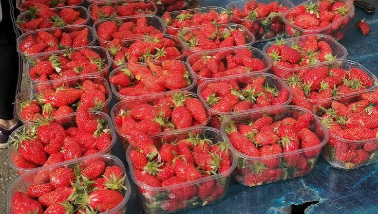

Fraises
du Tarn-et-Garonne


⟹ Produits du Terroir ⟸
Le Tarn-et-Garonne est souvent présenté comme « le plus beau verger du Sud-Ouest ». Quatrième département fruitier de France, il cultive pommes, prunes, chasselas, melons, kiwis, noisettes… et des fraises parmi les plus parfumées du pays, qui annoncent chaque printemps le retour de la belle saison.

La fraise cultivée telle que nous la connaissons est une histoire récente. Les fraises des bois étaient cueillies depuis l’Antiquité, mais la grosse fraise moderne naît au XVIIIe siècle en Europe du croisement de deux espèces américaines : une fraise du Chili, rapportée en 1714 par l’officier de marine Amédée-François Frézier, et une fraise de Virginie. Les obtenteurs n’ont cessé depuis de créer de nouvelles variétés.
Dans la vallée de la Garonne, la fraise trouve un terrain idéal : sols alluvionnaires légers et profonds, abondance de l’eau grâce au Tarn, à l’Aveyron et à la Garonne, printemps précoces et ensoleillés. Elle s’intègre longtemps aux exploitations familiales de polyculture, avant de se développer en cultures spécialisées autour de Montauban, Castelsarrasin, Moissac et Valence-d’Agen, dans le prolongement du grand bassin fraisier voisin du Lot-et-Garonne.
La star des fraises du Sud-Ouest est la gariguette. Créée en 1976 par la chercheuse Georgette Risser à l’INRA près d’Avignon, elle tire son nom de la garrigue où elle fut sélectionnée. Allongée, d’un rouge vif, à la fois sucrée et acidulée, elle est la première à arriver sur les étals, dès le mois de mars.
Aux côtés de la gariguette, les producteurs tarn-et-garonnais cultivent la ciflorette, la charlotte au goût de fraise des bois, la cléry précoce et la mara des bois, variété remontante qui prolonge la saison jusqu’aux premiers froids. Cette diversité permet de proposer des fraises de mars à octobre.
Aujourd’hui, une grande partie des fraises est cultivée sous abri — tunnels froids ou serres — et parfois hors-sol, en gouttières surélevées. Ces techniques protègent les fruits des pluies et des gelées de printemps, facilitent une cueillette quotidienne à la main et limitent les traitements grâce à la protection biologique intégrée (insectes auxiliaires, bourdons pollinisateurs).
La fraise est un fruit fragile qui ne mûrit plus une fois cueilli. C’est pourquoi la proximité est son meilleur atout : les fraises du Tarn-et-Garonne, cueillies à maturité et vendues en circuit court sur les marchés ou à la ferme, offrent une fraîcheur et un parfum que les fruits importés de loin ne peuvent égaler.
Une fraise se déguste à température ambiante, lavée avant d’être équeutée : c’est ainsi qu’elle libère tous ses arômes.
Conseil des producteurs de la vallée de la GaronneLes fraises du département ne bénéficient pas d’une indication géographique propre, mais certaines productions du bassin peuvent être commercialisées sous Label Rouge (gariguette, ciflorette, charlotte) ou sous le logo « Fraises de France ». Leur qualité repose avant tout sur le savoir-faire des producteurs et la vente directe.
Ne conservez jamais les fraises plus de deux jours, au bas du réfrigérateur, sans les laver ni les équeuter. Sortez-les une demi-heure avant de les servir.
Le conseil de la ficheGariguette : la plus précoce (mars à juin), allongée, rouge vif, saveur sucrée-acidulée très parfumée.
Ciflorette : forme conique, chair tendre et juteuse, parfum intense, en pleine saison d’avril à juin.
Charlotte : ronde et brillante, au goût rappelant la fraise des bois ; remontante, elle produit jusqu’à l’automne.
Cléry : variété précoce, ferme et sucrée, appréciée pour sa belle tenue et sa couleur vive.
Mara des bois : petite fraise remontante au parfum de fraise des bois, de l’été jusqu’aux premières gelées.
La pleine saison des fraises s’étend d’avril à juin, avec des variétés remontantes jusqu’en octobre. Privilégiez la vente directe pour des fruits cueillis du jour.
Montauban marchés de producteurs de la préfecture, où les fraisiculteurs de la vallée vendent leur cueillette du matin.
Castelsarrasin et Moissac au cœur des plaines du Tarn et de la Garonne, nombreux points de vente à la ferme.
Valence-d’Agen et la vallée de la Garonne zone de cultures maraîchères et fruitières, dans le prolongement du bassin fraisier du Lot-et-Garonne.
Cueillette à la ferme plusieurs exploitations proposent la cueillette libre au printemps, une sortie appréciée des familles.
Fête des Fruits et des Saveurs de Moissac en septembre, l’occasion de découvrir les fraises remontantes et les confitures du département.